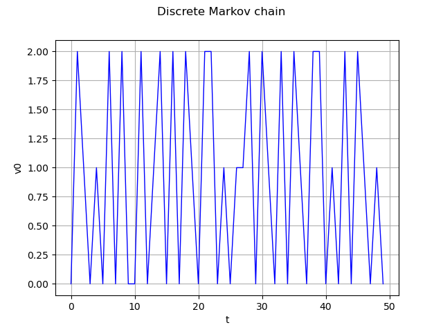
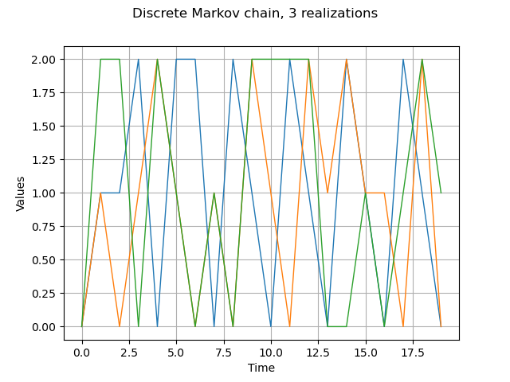
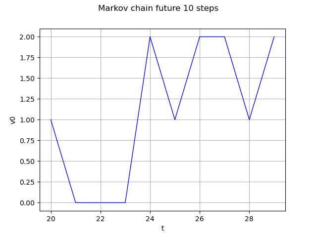
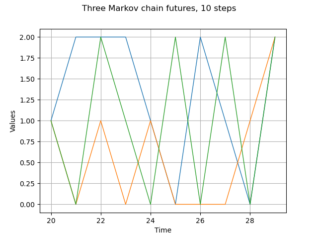

Note
Go to the end to download the full example code
Create a discrete Markov chain process¶
This example details first how to create and manipulate a discrete Markov chain.
A discrete Markov chain  , where
, where ![E = [\![ 0,...,p-1]\!]]() is a process
where
is a process
where  discretized on the time grid
discretized on the time grid  such
that:
such
that:
![\begin{aligned}
\forall k > 0,\: \mathbb{P} ( X_{t_k} \> | \> X_{t_0},...X_{t_{k-1}} ) = \mathbb{P} ( X_{t_k} \> | \> X_{t_{k-1}} )
\end{aligned}]()
The transition matrix of the process  can be defined such that:
can be defined such that:
![\begin{aligned}
\forall t_k \in \mathcal{D}, \forall i,j < p , \> m_{i+1,j+1} = \mathbb{P} (X_{t_{k+1}} = j \> | \> X_{t_{k}} = i)
\end{aligned}]()
The library proposes to model it through the object DiscreteMarkovChain defined thanks to the origin  (which can be either deterministic or uncertain), the transition matrix
(which can be either deterministic or uncertain), the transition matrix  and the time grid.
and the time grid.
import openturns as ot
import openturns.viewer as viewer
from matplotlib import pylab as plt
ot.Log.Show(ot.Log.NONE)
Define the origin
origin = ot.Dirac(0.0)
Define the transition matrix
transition = ot.SquareMatrix([[0.1, 0.3, 0.6], [0.7, 0.1, 0.2], [0.5, 0.3, 0.2]])
Define an 1-d mesh
tgrid = ot.RegularGrid(0.0, 1.0, 50)
Markov chain definition and realization
process = ot.DiscreteMarkovChain(origin, transition, tgrid)
real = process.getRealization()
graph = real.drawMarginal(0)
graph.setTitle("Discrete Markov chain")
view = viewer.View(graph)

Get several realizations
process.setTimeGrid(ot.RegularGrid(0.0, 1.0, 20))
reals = process.getSample(3)
graph = reals.drawMarginal(0)
graph.setTitle("Discrete Markov chain, 3 realizations")
view = viewer.View(graph)

Markov chain future 10 steps
future = process.getFuture(10)
graph = future.drawMarginal(0)
graph.setTitle("Markov chain future 10 steps")
view = viewer.View(graph)

Markov chain 3 different futures
futures = process.getFuture(10, 3)
graph = futures.drawMarginal(0)
graph.setTitle("Three Markov chain futures, 10 steps")
view = viewer.View(graph)
plt.show()
